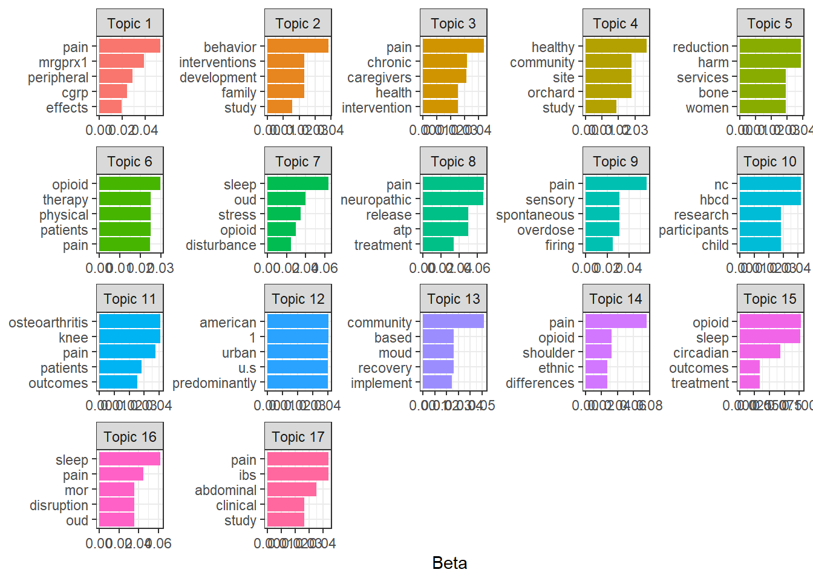

pacman::p_load(tidyverse, tidytext, stm, knitr, gt)Topic Modeling with R
Introduction
For this project I’ll be following an example of performing topic modeling with R using the Tidytext format introduced by Julia Silge and David Robinson in their “Text Mining with R! A Tidy Approach”. And I’ll be using abstracts submitted by Johns Hopkins University for funding to the NIH HEAL Initiative. The list of funded projects can be found at https://heal.nih.gov/funding/awarded. A benefit of using this data is that it doesn’t require much cleaning as Twitter text might. For the purposes of this demonstration I won’t do any data cleaning. The objective will be to find the optimal number of topics to which to attribute the abstracts. I’ll be using the tidyverse and tidytext packages for wrangling, the stm package for modeling, the janitor package for cleaning column names (but I won’t load it because I’m only going to use it once), the knitr package for table formatting, and the pacman package to load my packages (also only used once).
Downloading the abstract data
I’ll first download the data from the NIH’s Funded Projects page and filter for John’s Hopkins. The code for this is below, though, I will not run it because the data change as proposals are submitted. Instead I’ll download the filtered data to my hard drive and the ensuing analysis will be based on the data available as of this writing (January 25, 2024).
# Not run
read_csv(
"https://heal.nih.gov/funding/awarded/export?combine=johns%20hopkins&_format=csv"
) |>
write_csv(file.path(data_dir, "jh-data.csv"))Now I’ll read that data in and just look at the column names to start familiarizing myself with the data
jh_data <- read_csv(file.path(data_dir, "jh-data.csv"))
glimpse(jh_data)Rows: 30
Columns: 10
$ `Project #` <chr> "1RF1NS134549-01", "1R01DA059473-01", "5U54DA049…
$ `Project Title` <chr> "Validation of a New Large-Pore Channel as a Nov…
$ `Research Focus Area` <chr> "Preclinical and Translational Research in Pain …
$ `Research Program` <chr> "Discovery and Validation of Novel Targets for S…
$ `Administering IC(s)` <chr> "NINDS", "NIDA", "NIDA", "NIAMS", "NIDA", "NIDA"…
$ `Institution(s)` <chr> "JOHNS HOPKINS UNIVERSITY", "JOHNS HOPKINS UNIVE…
$ `Investigator(s)` <chr> "QIU, ZHAOZHU (contact); GUAN, YUN", "HUHN, ANDR…
$ `Location(s)` <chr> "Baltimore, MD", "Baltimore, MD", "Baltimore, MD…
$ `Year Awarded` <dbl> 2023, 2023, 2023, 2023, 2022, 2022, 2022, 2022, …
$ Summary <chr> "Activation of immune cells (microglia) in the c…It looks like there are 30 columns in the data. I’m going to clean up the column names and select only the Project # (to use as an identifier), Project Title, and Summary.
jh_clean <- jh_data |>
janitor::clean_names() |>
select(project_number, project_title, summary)
head(jh_clean, 3) |> gt::gt() # kable(booktabs = TRUE)| project_number | project_title | summary |
|---|---|---|
| 1RF1NS134549-01 | Validation of a New Large-Pore Channel as a Novel Target for Neuropathic Pain | Activation of immune cells (microglia) in the central nervous system and neuroinflammation have emerged as key drivers of neuropathic pain. These processes can be triggered by release of ATP, the compound that provides energy to many biochemical reactions. The source and mechanism of ATP release are poorly understood but could be targets of novel treatment approaches for neuropathic pain. This project will use genetic, pharmacological, and electrophysiological approaches to determine whether a large pore channel called Swell 1 that spans the cell membrane is the source of ATP release and resulting neuropathic pain and thus could be a treatment target. |
| 1R01DA059473-01 | Sleep and Circadian Rhythm Phenotypes and Mechanisms Associated With Opioid Use Disorder Treatment Outcomes | Chronic opioid use has well known effects on sleep quality, including disordered breathing during sleep and other abnormalities related to circadian rhythms. However, little is known about the relationship between sleep-related symptoms and non-medical opioid use among individuals being treated for opioid use disorder. This longitudinal study aims to identify biological pathways that may account for these associations. The research will first determine associations of sleep and proxy measures of circadian rhythms with non-medical opioid use. Second, they will investigate emotional processes associated with sleep/circadian symptoms and opioid treatment outcomes. |
| 5U54DA049110-04 | Data Center for Acute to Chronic Pain Biosignatures | Understanding the mechanisms underlying the transition to chronic pain is key to mitigating the dual epidemics of chronic pain and opioid use in the United States. As part of the National Institutes of Health-funded Acute to Chronic Pain Signatures Program, the Data Integration and Resource Center aims to This project will support a post-doctoral trainee to develop the skills and knowledge needed to pursue a successful career in clinical pain research. The research will involve integrating imaging, physiology, -omics, behavioral, and clinical data to develop biosignatures for the transition from acute to chronic pain, toward understanding how the nervous and immune systems affect post-surgical pain and opioid use. |
Tidy the data
In this next step I’m going to tidy the data and remove stop words. Then I’ll take a look at word frequencies and TF-IDF metrics to get an idea of what I might expect from my model.
I’m first going to use the tidytext::unnest_tokens() function to tokenize the data by single word then remove stop words from the text. I’ll also get word frequencies in this one step. Also, I’m going to drop the project title for the time being, but I’ll bring it back later.
jh_tidy <- jh_clean |>
mutate(summary = str_c(project_title, summary, sep = " ")) |>
select(-project_title) |>
unnest_tokens(word, summary, token = "words") |>
anti_join(stop_words, by = "word") |>
count(project_number, word)
jh_tidy |> arrange(-n) |> head(10) |> gt()| project_number | word | n |
|---|---|---|
| 1RF1NS113883-01 | pain | 9 |
| 3R01MD009063-05S1 | pain | 9 |
| 1UG3NS115718-01 | mrgprx1 | 8 |
| 1U01HL150568-01 | sleep | 7 |
| 1U01HL150835-01 | sleep | 7 |
| 5U54DA049110-04 | pain | 7 |
| 1R01DA059473-01 | opioid | 6 |
| 1R01DA059473-01 | sleep | 6 |
| 1R61AT012279-01 | shoulder | 6 |
| 1U01HL150835-01 | stress | 6 |
The words “pain” is one of the most frequently occurring word in documents 1RF1NS113883-01 and 5U54DA049110-04 while the words “pain” and “sleep” seem to be 2 of the most frequent across documents. Let’s see how these words do in terms of how important they are in distinguishing a document from other documents.
I’m going to add TF-IDF metrics using the tidytext::bind_tf_idf() function.
jh_tfidf <- jh_tidy |> bind_tf_idf(word, project_number, n)
jh_tfidf |>
arrange(-tf_idf) |>
head(15) |>
gt()| project_number | word | n | tf | idf | tf_idf |
|---|---|---|---|---|---|
| 3U24TR001609-04S1 | tin | 1 | 0.33333333 | 3.401197 | 1.1337325 |
| 3U24TR001609-04S1 | summary | 1 | 0.33333333 | 2.708050 | 0.9026834 |
| 3U24TR001609-04S1 | supplement | 1 | 0.33333333 | 2.302585 | 0.7675284 |
| 1R61HL156248-01 | intranasal | 1 | 0.12500000 | 3.401197 | 0.4251497 |
| 1R61HL156248-01 | leptin | 1 | 0.12500000 | 3.401197 | 0.4251497 |
| 1R61HL156248-01 | induced | 1 | 0.12500000 | 2.708050 | 0.3385063 |
| 1R61HL156248-01 | respiratory | 1 | 0.12500000 | 2.708050 | 0.3385063 |
| 1R61HL156248-01 | summary | 1 | 0.12500000 | 2.708050 | 0.3385063 |
| 1R61HL156248-01 | depression | 1 | 0.12500000 | 2.302585 | 0.2878231 |
| 1R61AT012279-01 | shoulder | 6 | 0.08333333 | 3.401197 | 0.2834331 |
| 1RF1AG068997-01 | bone | 3 | 0.06976744 | 3.401197 | 0.2372928 |
| 1R01DA057655-01 | harm | 4 | 0.06666667 | 3.401197 | 0.2267465 |
| 1R01DA057655-01 | reduction | 4 | 0.06666667 | 3.401197 | 0.2267465 |
| 1UG3NS115718-01 | mrgprx1 | 8 | 0.06557377 | 3.401197 | 0.2230293 |
| 1R01DA059473-01 | sleep | 6 | 0.10169492 | 2.014903 | 0.2049054 |
It’s very strange that 2 documents have the term “summary” as the only term in the summary. This is indicated by a term frequency (tf) of 1. Let’s take a look at the original text for these documents.
jh_clean |>
filter(
project_number %in% c("1R61HL156248-01", "3U24TR001609-04S1")
) |>
select(project_number, summary) |>
gt()| project_number | summary |
|---|---|
| 1R61HL156248-01 | no summary |
| 3U24TR001609-04S1 | no summary |
There was no summary for either of these documents! The word “summary” had a really high TF-IDF because it was the only word (“no” is a stopword and was dropped) in these documents and it likely isn’t used very frequently in other documents. This is one of the benefits of doing this kind of check before going into modeling. Interestingly, though, neither “pain” nor “stress” are in the terms with the top 15 TF-IDF values. I imagine it’s because these words occur in a lot of the documents and, therefore, would not be very useful in distinguishing one project from another. So I’ll drop the two project with no summaries and go into the modeling.
jh_tidy <- jh_tidy |>
filter(
!project_number %in% c("1R61HL156248-01", "3U24TR001609-04S1")
)Modeling
To be able to perform text mining of any kind, including structural topic modeling, I first need to put my data into a sparse matrix. For this I’ll use the tidytext::cast_sparse() function.
jh_sparse <- jh_tidy |> cast_sparse(project_number, word, n)
dim(jh_sparse)[1] 28 1023I now have a matrix of 28 and 1023 columns. There is now one column for each distinct word in my corpus of data. I’m going to create a structural model with 3 topics (number chosen arbitrarily) just to get an idea of how I might evaluate a model. I’m going to use the stm::stm() function and use the LDA algorithm to generate my model.
jh_lda_3 <- jh_sparse |>
stm(K = 3, init.type = "LDA", seed = 212, verbose = FALSE)Now I want to see what some of the most frequently occurring words are within each topic. For this I’m going to simply use the tidy method from stm on the model. By default, the tidy method extracts values of “beta” which tells us the probability that a word comes from a given topic.
jh_lda_3 |>
tidy() |>
group_by(topic) |>
slice_max(beta, n = 10, with_ties = FALSE) |>
ungroup() |>
ggplot(aes(reorder_within(term, beta, topic), beta, fill = factor(topic))) +
geom_col(show.legend = FALSE) +
scale_x_reordered() +
labs(y = "Beta", x = NULL) +
facet_wrap(~ topic, scales = "free") +
coord_flip() +
theme_bw()
The word “pain” is in the top 2 most frequently occurring words in each topic and the word “opioid” occurs in the top 10 words of 2 of the topics. It looks like the model’s not doing a great job of separating topics based on this.
Another interesting metric to look at is “gamma” which is the probability that a given document is related to a given topic and this is also provided by our model output, which we can access by specifying the matrix = "gamma" argument in our tidy() function.
jh_lda_3 |>
tidy(matrix = "gamma") |>
mutate(topic = str_c("Topic", topic, sep = " ") |> factor()) |>
ggplot(aes(document, gamma, fill = topic)) +
geom_col(show.legend = FALSE) +
scale_x_continuous(breaks = 1:nrow(distinct(jh_tidy, project_number))) +
facet_wrap(~ topic, scales = "free", ncol = 1) +
labs(x = "Document", y = "Gamma") +
theme_bw()
It looks like each document except for Document 16 has a high probability of coming from only 1 topic. This is pretty good considering what the beta values showed.
Next I’ll see if there’s a better number of topics to separate these documents into.
Choosing a number of topics
First I’m going to build a set of LDA models with values of K (number of topics) ranging from 2 to 25. I’m also going to create a hold-out dataset to calculate the heldout-likelihood metric later. This is somewhat akin to using a cross-validation holdout set in other machine learning methodologies.
jh_tune_models <- tibble(k = 2:24) |>
mutate(
lda_mod = map(
k,
\(x) stm(
jh_sparse,
K = x,
init.type = "LDA",
seed = 212,
verbose = FALSE
)
)
)
heldout <- make.heldout(jh_sparse)Now I’m going to extract the metrics that I want to use to evaluate my model. I’m going to focus on the approach of find the value of K with high held-out likelihood and semantic coherence metrics, but I’m also interested in looking at the residual and exclusivity metrics, so I’ll keep those as well.
jh_tune_results <- jh_tune_models |>
mutate(
exclusivity = map(lda_mod, exclusivity),
semantic_coherence = map(
lda_mod,
semanticCoherence,
documents = jh_sparse,
M = 10
),
eval_heldout = map(lda_mod, eval.heldout, heldout$missing),
residual = map(lda_mod, checkResiduals, jh_sparse)
)jh_tune_results |>
transmute(
k,
Residuals = map_dbl(residual, "dispersion"),
`Semantic coherence` = map_dbl(semantic_coherence, mean),
`Held-out likelihood` = map_dbl(eval_heldout, "expected.heldout"),
Exclusivity = map_dbl(exclusivity, mean)
) |>
pivot_longer(-k, names_to = "metrics", values_to = "value") |>
ggplot(aes(k, value, color = metrics)) +
geom_line(show.legend = FALSE) +
labs(x = "Number of Topics", y = NULL) +
facet_wrap(~ metrics, scales = "free_y") +
theme_bw()
The highest held-out likelihood score comes from the model with K = 17 and the highest semantic coherence comes from the model with K = 20, so there’s a little bit of a trade-off. In this case I’m going to go with parsimony and choose the model with K = 17. This model also has relatively high exclusivity. Notably, exclusivity and the residual seem to flatten out and semantic coherence increases dramatically at K > 10.
Now I’m going to look at both the K = 17 and K = 20 models to see whether one is clearly better. I’m going to start by looking at how easily each model would predict each document to belong to a specific topic. For that, I’m going to look at the maximum values of gamma for each document. For comparison I’m going to show the same plot for the approach of maximizing semantic coherence (K = 21).
jh_tune_models |>
filter(k %in% c(17, 20)) |>
mutate(
max_gammas = map(
lda_mod,
\(x) tidy(x, matrix = "gamma") |>
group_by(document) |>
summarise(gamma = max(gamma), .groups = "drop")
),
k_label = str_c("Number of Topics:", k, sep = " ") |> fct_reorder(k)
) |>
select(-lda_mod) |>
unnest(max_gammas) |>
ggplot(aes(document, gamma, fill = factor(k))) +
geom_col(show.legend = FALSE) +
scale_x_continuous(breaks = 1:24) +
labs(x = "Document", y = "Maximum Gamma") +
facet_wrap(~ k_label, ncol = 1) +
theme_bw()
It looks like both models yield relatively high probabilities that each document corresponds to one specific topic across the board with only documents 23 and 24 having maximum gammas below 0.75, but the model with K = 17 generally performs a bit better.
For the purposes of visualization I’ll look at the top 5 words defining the topics for the 17-topic model.
jh_tune_models |>
filter(k == 17) |>
pluck("lda_mod", 1) |>
tidy() |>
group_by(topic) |>
slice_max(beta, n = 5, with_ties = FALSE) |>
ungroup() |>
mutate(
topic = str_c("Topic", topic, sep = " ") |>
factor(levels = str_c("Topic", 1:17, sep = " "))
) |>
ggplot(aes(reorder_within(term, beta, topic), beta, fill = factor(topic))) +
geom_col(show.legend = FALSE) +
scale_x_reordered() +
labs(y = "Beta", x = NULL) +
facet_wrap(~ topic, scales = "free") +
coord_flip() +
theme_bw()
The word “pain” appears in the top 5 words of 7 topics; in further analysis I might consider making this a stop word along with words like “study” and “research”. But topic 11 seems to be about joint issues given the prevalence of the words “osteoarthritis” and “knee”; topic 12 seems to be about demographics with words like “american” and “urban” in the top 5 words; and topic 17 seems to be clearly about digestion issues with words like “pain”, “ibs”, and “abdominal” in the top 5 words.
Finally, I’ll look at the titles grouped by each project’s maximum gamma value. You be the judge.
jh_tune_models |>
filter(k == 17) |>
pluck("lda_mod", 1) |>
tidy(matrix = "gamma") |>
nest(data = -document) |>
mutate(
data = map(data,\(x) slice_max(x, gamma, n = 1, with_ties = FALSE)),
project_number = rownames(jh_sparse)
) |>
unnest(data) |>
left_join(
jh_clean |> select(project_number, project_title),
by = "project_number"
) |>
select(topic, project_title, gamma) |>
mutate(gamma = round(gamma, 3)) |>
arrange(topic, gamma) |>
gt()| topic | project_title | gamma |
|---|---|---|
| 1 | Validation of peripheral CGRP signaling as a target for the treatment of pain in chronic pancreatitis | 0.991 |
| 1 | Development of MRGPRX1 positive allosteric modulators as non-addictive therapies for neuropathic pain | 0.994 |
| 2 | DEVELOPMENT & MALLEABILITY FROM CHILDHOOD TO ADULTHOOD | 0.993 |
| 3 | Data Center for Acute to Chronic Pain Biosignatures | 0.991 |
| 3 | Social Networks among Native American caregivers participating in an evidence-based and culturally informed intergenerational intervention | 0.993 |
| 4 | HEALthy ORCHARD: Developing plans for a Baltimore site of the HEALthy BCD study | 0.989 |
| 5 | Subchondral Bone Cavities in Osteoarthritis Pain | 0.985 |
| 5 | Implementing and Evaluating the Impact of Novel Mobile Harm Reduction Services on Overdose Among Women who use Drugs: The SHOUT Study | 0.989 |
| 6 | Improving Function and Reducing Opioid Use for Patients with Chronic Low Back Pain in Rural Communities Through Improved Access to Physical Therapy Using Telerehabilitation | 0.992 |
| 6 | UNDERSTANDING THE INTERSECTION BETWEEN OPIOIDS AND SUICIDE THROUGH THE SOUTHWEST HUB | 0.993 |
| 7 | Evaluating the Role of the Orexin System in Circadian Rhythms of Sleep and Stress in Persons on Medication-Assisted Treatments for Opioid Use Disorder | 0.993 |
| 7 | Evaluating Suvorexant for Sleep Disturbance in Opioid Use Disorder | 0.993 |
| 8 | Validation of a New Large-Pore Channel as a Novel Target for Neuropathic Pain | 0.987 |
| 9 | The Short and Long-Term Dynamics of Opioid/Stimulant Use: Mixed Methods to Inform Overdose Prevention and Treatment Related to Polysubstance Use | 0.992 |
| 9 | Sympathetic-mediated sensory neuron cluster firing as a novel therapeutic target for neuropathic pain | 0.995 |
| 10 | 7/24 Healthy Brain and Child Development National Consortium | 0.990 |
| 11 | A sequenced-strategy for improving outcomes in patients with knee osteoarthritis pain | 0.989 |
| 11 | A sequenced-strategy for improving outcomes in patients with knee osteoarthritis pain | 0.990 |
| 11 | Increasing Participant Diversity in a 'Sequenced-Strategy to Improve Outcomes in People with Knee Osteoarthritis Pain (SKOAP) | 0.991 |
| 11 | Mentorship of Junior Investigators on HEAL-SKOAP | 0.992 |
| 11 | A sequenced-strategy for improving outcomes in patients with knee osteoarthritis pain | 0.994 |
| 13 | DC Research Infrastructure Building & Initiative to Reach, Engage, and Retain in MOUD Patients with OUD | 0.754 |
| 13 | DC Research Infrastructure Building & Initiative to Reach, Engage, and Retain in MOUD Patients with OUD | 0.754 |
| 14 | Quantifying and Treating Myofascial Dysfunction in Post Stroke Shoulder Pain | 0.990 |
| 14 | ETHNIC DIFFERENCES IN ENDOGENOUS PAIN REGULATION: PET IMAGING OF OPIOID RECEPTORS | 0.993 |
| 15 | Sleep and Circadian Rhythm Phenotypes and Mechanisms Associated With Opioid Use Disorder Treatment Outcomes | 0.988 |
| 16 | Effects of experimental sleep disruption and fragmentation on cerebral Mu-opioid receptor function, Mu-opioid receptor agonist analgesia, and abuse liability. | 0.991 |
| 17 | Home-based transcutaneous electrical acustimulation for abdominal pain | 0.991 |
Arcenis Rojas - Topic Modeling with R Arcenis Rojas - Topic Modeling with R Arcenis Rojas - Topic Modeling with R Arcenis Rojas